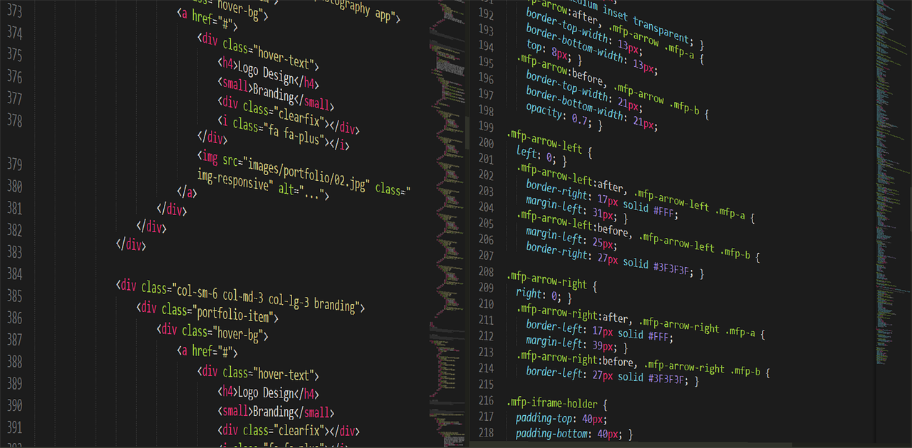
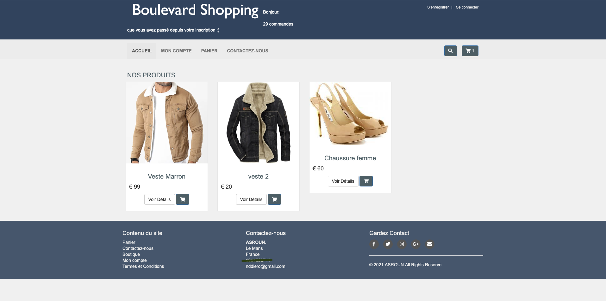

Je m'appelle Nourreddine ASROUN, passionné par le développement web et actuellement en reconversion dans le domaine de l’informatique.
Issu d’un parcours initial dans un autre domaine, j’ai progressivement orienté ma carrière vers l’informatique, un secteur qui m’a toujours passionné. Cette reconversion est le fruit d’une volonté forte d’évoluer dans un environnement technologique stimulant et porteur d’avenir.
Dans cette dynamique, j’ai obtenu un certificat professionnel en développement web, qui m’a permis d’acquérir les bases solides du développement front-end et back-end. Fort de cette première étape, j’ai intégré la Licence d’Informatique de l’Université Paris 8 afin de renforcer mes compétences théoriques et pratiques dans des domaines clés comme les algorithmes, les bases de données, et le développement web avancé.
Motivé, rigoureux et en constante veille technologique, je m’investis pleinement dans cette formation qui représente pour moi une réelle opportunité d’atteindre mon objectif professionnel : devenir un développeur qualifié, capable de concevoir et de maintenir des solutions logicielles robustes, évolutives et centrées sur l’utilisateur.

Dans le cadre de ma formation, j’ai réalisé un site web e-commerce en utilisant HTML, CSS, PHP et JavaScript. Ce site permet à des utilisateurs de consulter des produits, de passer commande, et pour les administrateurs de gérer entièrement la boutique.
La base de données MySQL permet d’enregistrer les utilisateurs, les produits, les commandes, ainsi que les droits d’accès. L’espace administrateur donne la possibilité d’ajouter, modifier ou supprimer des articles.
J’ai également mis en place un système de connexion sécurisé, une validation des formulaires côté client avec JavaScript, ainsi qu’un tableau de bord statistique.
Ce projet m’a permis de maîtriser les bases du développement web complet (front-end et back-end) et de renforcer ma rigueur dans l’organisation du code et des fichiers.

| HTML | CSS | JavaScript | PHP/MySQL |
|---|---|---|---|
| Niveau avancé | Niveau intermédiaire | Niveau débutant | Niveau débutant |
Pour toute question ou collaboration, n’hésitez pas à me contacter :